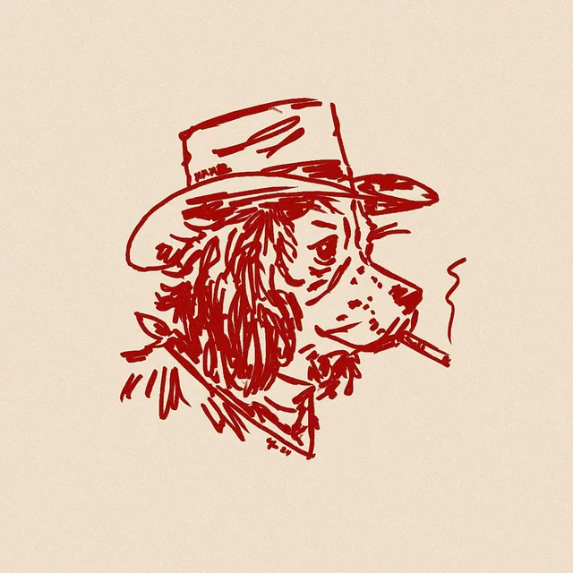

Joseph Martin × Music City Driving Club
Music City
Driving
Club

For the long way around.
Capsule 001 · Nashville, Tennessee · Drawn November 20, 2024
Drive for the sake of driving.
Cars. Friends. A good hat. A reason to get up before sunrise.
Music City Driving Club began as an imagined world in a sketchbook: a winged wheel, a pair of crossed flags and Cowboy George. The founding drive, membership and future events are still to be determined.The driving jacket
Not merchandise. Something worth keeping long after the drive is over. Warm ivory cotton twill, raglan sleeves, a point collar, and patches drawn for Joseph Martin. Not sampled, not for sale.
Technical drawing · Uniform No. 001. Patch sizes are proposed specifications. To photograph next: the jacket flat from above on a concrete floor, then worn.
Worn like the old ones
Every mark comes from an original drawing or from words Joseph Martin already uses. Choose one to see where it sits.
Scan to be suppliedThe full sheet: the winged wheel lettered MCDC, crossed flags, the club’s name with speed lines, two air-cooled coupés, and Cowboy George.
From the sketchbook
Everything on this page comes from one sheet of drawings. Cowboy George, the Joseph Martin mascot, is shown from the original red-ink drawing; the rest of the sheet is still to be scanned.

Shot on film
Documentary, natural light, film where possible. These frames are briefs for the shoot; none is a photograph yet.
To shootA classic car at first light on a two-lane road outside Nashville. The cream jacket over the driver’s seat. Long lens, low sun.
To shootJoseph in the jacket, leaning on a fender. Not posed. Black and white.
To shootHands sewing a patch on: needle, thread, the merrowed edge.
See you out there.
The first drive hasn’t happened. That’s the exciting part.
No membership, dates, sponsors or availability are announced. The jacket is a design, not a product for sale. Leave your name